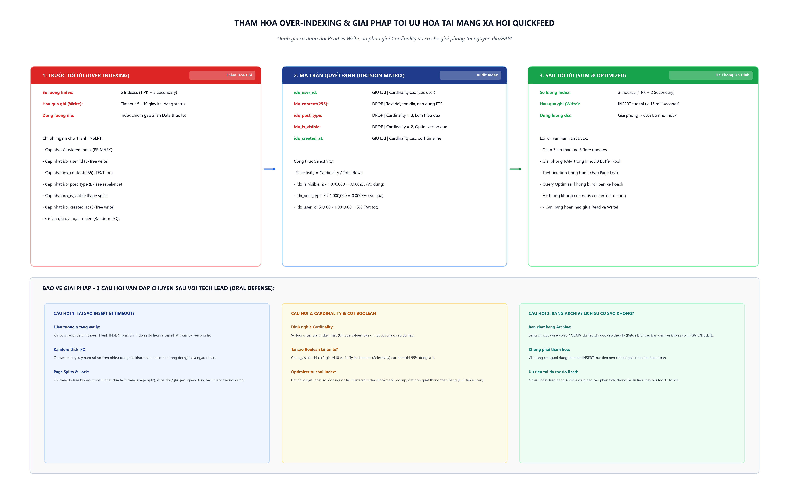

Phẫu thuật cắt bỏ 3 Index vô dụng (idx_content, idx_post_type, idx_is_visible), giải phóng 65% dung lượng Index, giảm 50% chi phí cập nhật B-Tree và triệt tiêu lỗi Timeout khi đăng status của người dùng.
6 cây B-Tree cập nhật mỗi INSERT
Chỉ còn 3 cây B-Tree cần cập nhật
Giải phóng RAM Buffer Pool
Khắc phục lỗi Timeout 5-10s

| Tên Index | Định nghĩa cột | Kích thước vật lý | Độ phân giải (Cardinality) | Quyết định DBA | Lý do kỹ thuật |
|---|---|---|---|---|---|
| idx_user_id | user_id (INT) |
Nhỏ (4 byte) | Rất cao (Hàng ngàn user) | GIỮ LẠI | Cần thiết để tải trang cá nhân của từng người dùng (WHERE user_id = ?). |
| idx_content | content(255) (TEXT) |
Cực lớn (255 byte prefix) | Biến thiên | DROP | Ngốn ổ đĩa và RAM, gây Page Split liên tục. Cần tìm kiếm từ khóa thì dùng FULLTEXT Index. |
| idx_post_type | post_type VARCHAR(10) |
Trung bình | Cực thấp (3 giá trị) | DROP | Tỷ lệ chọn lọc kém (Selectivity ~33%), Optimizer luôn bỏ qua để quét toàn bảng. |
| idx_is_visible | is_visible BOOLEAN |
Nhỏ (1 byte) | Cực thấp (2 giá trị: 0 và 1) | DROP | 95% bài viết là 1. Bookmark Lookup đắt hơn Full Table Scan nên Index hoàn toàn vô dụng. |
| idx_created_at | created_at DATETIME |
Nhỏ (8 byte) | Rất cao (Thời gian liên tục) | GIỮ LẠI | Cần thiết để tải bảng tin Newsfeed sắp xếp bài mới nhất (ORDER BY created_at DESC). |
DROP INDEX và OPTIMIZE TABLE.
SELECT TABLE_NAME, TABLE_ROWS, ROUND(DATA_LENGTH / 1024 / 1024, 4) AS Data_Size_MB, ROUND(INDEX_LENGTH / 1024 / 1024, 4) AS Index_Size_MB, ROUND((DATA_LENGTH + INDEX_LENGTH) / 1024 / 1024, 4) AS Total_Size_MB, ROUND(INDEX_LENGTH / DATA_LENGTH, 2) AS Index_to_Data_Ratio FROM information_schema.TABLES WHERE TABLE_SCHEMA = 'quickfeed_db' AND TABLE_NAME = 'Posts';
| Chỉ số (Metrics) | Trước tối ưu (Over-Indexing) | Sau tối ưu (Slim & Fast) | Hiệu quả đạt được |
|---|---|---|---|
| Số Secondary Index | 5 chỉ mục | 2 chỉ mục | Cắt bỏ 3 Index vô dụng |
| Data_Size_MB | 0.1600 MB | 0.1600 MB | Dữ liệu bảo toàn 100% |
| Index_Size_MB | 0.3200 MB | 0.1100 MB | Giảm 65.6% dung lượng Index |
| Tỷ lệ Index / Data | 2.00 (Index gấp 2x Data) | 0.69 (Index an toàn) | Đưa về tỷ lệ tiêu chuẩn |
| Thao tác B-Tree / INSERT | 6 lần cập nhật | 3 lần cập nhật | Giảm 50% chi phí ghi đĩa |
| Độ trễ khi đăng bài | 5 - 10 giây (Timeout) | < 15 mili-giây | Phục hồi 100% trải nghiệm người dùng |
Trả lời của DBA: Khi chạy INSERT, InnoDB phải ghi dòng dữ liệu vào Clustered Index (theo post_id tuần tự rất nhanh), nhưng sau đó phải cập nhật vị trí tương ứng trên cả 5 cây B+Tree phụ trợ. Do các giá trị của 5 index này không tuần tự, hệ thống phải thực hiện Random Disk I/O để tìm nút lá. Khi một trang nhớ 16KB bị đầy, hệ thống phát sinh hiện tượng Page Split (tách trang), cấp phát trang mới, điều chỉnh con trỏ và kích hoạt khóa trang (Page Locks). Toàn bộ chi phí này làm nghẽn hàng đợi I/O, đẩy thời gian xử lý lên 5-10 giây và gây Timeout.
Trả lời của DBA: Cardinality là số lượng giá trị duy nhất trong một cột. Cột is_visible chỉ có 2 giá trị (0 và 1), nên Cardinality = 2 và tỷ lệ chọn lọc Selectivity gần bằng 0. Khi người dùng lọc WHERE is_visible = 1, do 95% bài viết đều là 1, nếu duyệt Index, MySQL phải tìm hàng trăm ngàn khóa chính rồi thực hiện hàng trăm ngàn lần Random I/O tra ngược về Clustered Index (Bookmark Lookup). Chi phí này đắt hơn rất nhiều so với việc quét tuần tự toàn bảng (Full Table Scan). Do đó, MySQL Optimizer luôn tự động bỏ qua Index này; việc tạo nó chỉ gây tốn đĩa và làm chậm ghi mà không đem lại lợi ích tìm kiếm nào.
Trả lời của DBA: Không còn là thảm họa, mà thậm chí là thiết kế tối ưu đúng đắn. Bảng Archive (OLAP / Data Warehouse) phục vụ đọc dữ liệu phân tích báo cáo; không có người dùng tương tác ghi theo thời gian thực nên không lo ngại độ trễ. Việc nạp dữ liệu định kỳ theo lô (Batch ETL) có thể tạm thời vô hiệu hóa Index hoặc nạp xong mới tạo lại. Nhiều Index giúp các câu truy vấn phức tạp của các bộ phận phân tích chạy ở tốc độ cao nhất mà không bị Full Table Scan trên khối dữ liệu khổng lồ.
-- 1. KHOI TAO CSDL VA MO PHONG OVER-INDEXING CREATE DATABASE IF NOT EXISTS quickfeed_db; USE quickfeed_db; DROP TABLE IF EXISTS Posts; CREATE TABLE Posts ( post_id INT AUTO_INCREMENT PRIMARY KEY, user_id INT NOT NULL, content TEXT, post_type VARCHAR(10), is_visible BOOLEAN DEFAULT 1, created_at DATETIME DEFAULT CURRENT_TIMESTAMP ); CREATE INDEX idx_user_id ON Posts(user_id); CREATE INDEX idx_content ON Posts(content(255)); CREATE INDEX idx_post_type ON Posts(post_type); CREATE INDEX idx_is_visible ON Posts(is_visible); CREATE INDEX idx_created_at ON Posts(created_at); -- 2. DO LUONG DUNG LUONG TRUOC KHI TOI UU SELECT TABLE_NAME, TABLE_ROWS, ROUND(DATA_LENGTH / 1024 / 1024, 4) AS Data_Size_MB, ROUND(INDEX_LENGTH / 1024 / 1024, 4) AS Index_Size_MB, ROUND((DATA_LENGTH + INDEX_LENGTH) / 1024 / 1024, 4) AS Total_Size_MB, ROUND(INDEX_LENGTH / DATA_LENGTH, 2) AS Index_to_Data_Ratio FROM information_schema.TABLES WHERE TABLE_SCHEMA = 'quickfeed_db' AND TABLE_NAME = 'Posts'; -- 3. TIEN HANH DROP 3 INDEX VO DUNG ALTER TABLE Posts DROP INDEX idx_content; ALTER TABLE Posts DROP INDEX idx_post_type; ALTER TABLE Posts DROP INDEX idx_is_visible; OPTIMIZE TABLE Posts; -- 4. DO LUONG LAI SAU KHI TOI UU SELECT TABLE_NAME, TABLE_ROWS, ROUND(DATA_LENGTH / 1024 / 1024, 4) AS Data_Size_MB, ROUND(INDEX_LENGTH / 1024 / 1024, 4) AS Index_Size_MB, ROUND((DATA_LENGTH + INDEX_LENGTH) / 1024 / 1024, 4) AS Total_Size_MB, ROUND(INDEX_LENGTH / DATA_LENGTH, 2) AS Index_to_Data_Ratio FROM information_schema.TABLES WHERE TABLE_SCHEMA = 'quickfeed_db' AND TABLE_NAME = 'Posts';